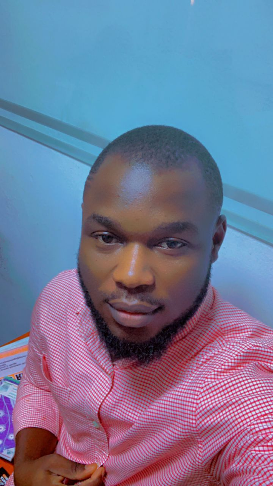

I find myself poised to unravel the intricasies of my life tapestry - a tale my experience, aspirations and objectives regarding upskils, i am compelled to navigate through the momories and aspirations that shaped the essence of who i am.
sometime in the 90s down in the quite street of Gwarimpa, located in the capital city of the nation; Abuja, i was brought into the world during early hours of saturday, the 8th of October and was given the name "IKECHUKWU"
I am Agu Ikechukwu Francis, i was born into a family of 6; my dad, my mum and four(4) other male siblings and i happen to be the second child.
I am from Noyo-Alike ikwo which is located in Ikwo local government area of Ebonyi state. I am a grsduate and currently live here in Abuja
I began my educational journey with a strong and well laid foundation in nursery and primary school at Chinakwe International school from the year 2001.
the early years not only sparked up my my curiosity but also instilled in me a passion for learning that would shape my academic path. this came to and end
in the year 2009 after i wrote my First School leaving Certificate examination and graduated amongst the best 5 in the class.
I proceeded to government secondary school gwarimpa, abuja where i spent 3 years each in both the junoir and senior classes. In 2014 i wrote my Senior Secondary
Certificate Examination (WAEC and NECO) and passed in flying colours. My journey into the university was a transformative period marked by academic exploration,
personal growth and meaninful connection.
I wrote my entrance exams into the university and i was offered an admisson at Alex Ekwueme Federal University Ndufu-Alike Ikwo in Ebonyi State to study Human Anatomy.
Throughout my university journey, i embraced the value of mentorship and collarboration, seking guidance fron professors, advisors and colleagues who provided invaluable insights and
support. As i approached the culmination of my university education, i reflect on the profound impact it has had on shaping my identity, aspiration and future trajectory.
Armed with knowledge and skills i was poised to embark on the next chapter of my life with confidence and purpose, ready to make meaningful contribution to the society and pursue my dreams with passion and determination. I graduated in the year 2019 with a second class upper division and finally served my country the following year.
As i contemplate the prospects of joining Upskill "24 cohort 1, i am filled with a sense of excitement and purpose. My aspirations for being part of this esteemed organisation are rooted in a deep-seated desire to contribute meaningfully to its mission and value while furthering my personal and professional growth. i aspire to allign myself with the core values and objectives of Upskill. My objectives align seamlessly with UpSkill's mission of democratizing access to tech education, empowering individuals to thrive in an ever-evolving industry. As I immerse myself in the world of web design, my passion for creativity and innovation propels me forward, fueling my drive to make a lasting impact. With each milestone achieved, I remain committed to continuous growth, embracing lifelong learning as a cornerstone of my journey with UpSkill.
Attached below are links to my social media handles
link to assignment number 2